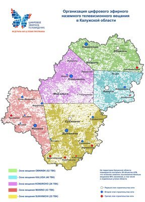

Калужская область готовится к переходу на цифровой формат эфирного телерадиовещания

В соответствии с Федеральной целевой программой «Развитие телерадиовещания в Российской Федерации на
2009-2015 годы» Калужская область, как и все регионы России, переходит на цифровой формат эфирного
телерадиовещания. В настоящее время развертывание цифровой сети в Калужской области вышло на этап
практического строительства сети, подготовительный этап завершен. Тестовое вещание планируется
начать во 2 полугодии 2013 года.
На территории области будут функционировать 29 объектов цифровой сети, из них: 8 - на базе
существующих станций и 21 - вновь построенные.
Аналоговая и цифровая трансляция будет работать параллельно до насыщения населения оборудованием для
цифрового телевидения. Согласно Указу Президента Российской Федерации от 24.06.2009 г. № 715 «Об
общероссийских обязательных общедоступных телеканалах и радиоканалах» в первый пакет цифрового
вещания войдут следующие телеканалы:
и 3 радиопрограммы:
В цифровое телерадиовещание планируется включение региональных программ.
Приём телевизионных и радиоканалов, транслируемых по цифровым эфирным сетям, можно будет осуществлять
при наличии индивидуальной (комнатной, наружной) или коллективной антенны и приёмного устройства -
телевизора с встроенным цифровым ресивером и стандартом сжатия видеосигнала MPEG-4 или обычного
аналогового телевизора с приставкой - цифровым эфирным ресивером. Цифровое вещание будет
осуществляться в стандарте DVB-T2, который позволит существенно увеличить количество передаваемой
информации. Необходимо учитывать, что телевизионная приемная аппаратура с поддержкой DVB-T
не сможет принимать сигнал DVB-T2.
При приобретении новой телевизионной аппаратуры, включая ТВ-приставки, для приема цифрового ТВ,
необходимо выбирать модели со встроенными цифровыми тюнерами, поддерживающими стандарт DVB-T2. В
настоящее время, учитывая общеевропейскую тенденцию перехода на стандарт DVB-T2, можно ожидать
существенного расширения ассортимента приемной телеаппаратуры с поддержкой данного стандарта.
Чем цифровое телевидение превосходит аналоговое? Цифровое телевидение обеспечивает более высокое
качество изображения и звука по сравнению с аналоговым, так как цифровой сигнал имеет высокую
устойчивость к различным помехам. Там где аналоговое телевидение принимается с шумами и помехами,
цифровой сигнал принимается в том качестве, в котором он формируется в телевизионных студиях. Кроме
этого, переход на цифровое вещание позволяет более эффективно использовать радиочастотный ресурс
эфирного пространства. За счет использования сжатия информации в полосе одного канала аналогового
телевидения можно передать несколько (до десяти) программ цифрового телевидения и различные
дополнительные данные. Поэтому цифровая передача оказывается, в расчете на один канал, более
дешевой.
В дальнейшем, в соответствии с частотно-территориальным планом, а также по мере отключения отдельных
каналов аналогового вещания и высвобождения частотного ресурса, государственным оператором связи или
иными операторами связи в регионах последовательно будут вводиться сети цифровой трансляции второго
и третьего мультиплексов, что позволит увеличить количество транслируемых телеканалов до 20-ти и
более.
Получить более подробную информацию о переходе на цифровое вещание можно получить из следующих
источников:
- Информация о Федеральной целевой программе «Развитие телерадиовещания в Российской Федерации на
2009-2015 годы» находится по адресу http://fcp.economy.gov.ru/cgi-bin/cis/fcp.cgi/Fcp/ViewFcp/View/2012/297/
(интернет-ресурс федеральных целевых программ в разделе Минэкономразвития России).
- Создан сайт в российской зоне Интернета : ртрс.рф . Данный ресурс
представляет общую информацию по цифровому телевидению, а также представляет новости регионов.
- Выделен ресурс на портале органов власти Калужской области — http://www.admoblkaluga.ru/main/society/digital_TV/.
данный ресурс по мере заполнения будет представлять полную информацию по цифровому телевидению
на территории Калужской области.
- Горячая линия (8-800-220-2002) по вопросам перехода на цифровое вещание. Звонок по России
бесплатный.
- Филиал РТРС «Калужский областной радиотелевизионный передающий центр» - диспетчер:
8(484-2)54-97-64, сайт http://kaluga.rtrn.ru.
- При организации эфирного телевизионного вещания планируется открытие Центра Консультационной
поддержки. Информация о Центре будет дополнительно доведена до населения области с помощью СМИ и
Интернет-ресурсов.

{kind=link}